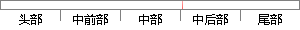

高斯混合模型是单一高斯概率密度函数的延伸，GMM能够平滑地近似任意形状的密度分布。
片段位置图

相似结果|
相似片段 1：3．4基于高维混合高斯的层次聚类算法高斯混合模型(GussianM xtureModel，GMM)，即多个高斯分布的混合分布，是单一高斯概率密度函数的延伸，由于GMM能够平滑地近似任意形状的密度分布
相似片段 2：无限多个高斯分布就能够平滑地近似任意形状的密度分布，从而能够精细的逼近目标音频特征矢量的空间分布，因此常被用在音频识别。高斯混合模型是单一高斯概率密度函数的延伸。高斯混合模型 GMM给出的概率密度函数
相似片段 3：图像颜色分布特性。4．2．1混合高斯模型的描述混合高斯模型(Gaussianmixturemodel，简称GMM)是单一高斯概率密度函数的延伸，由于GMM能够平滑地近似任意形状的密度分布，因此近年来
相似片段 4：（Gaussian mixture model，简称 GMM）是单一高斯机率密度函数的延伸，由于 GMM 能够平滑地近似任意形状的密度分布，因此近年来常被用在语音与语者辨识，得到不错的效果。5.3.1 高斯混合模型
相似片段 5：(SingleGaussianModel，SGM)和高斯混合模型两类。GMM是对单一的高斯概率密度函数的一种延伸，它能够平滑地近似任意形状的密度分布。和聚类算法有些类似，我们可以根据高斯概率密度函数
相似片段 6：3．2．1高斯混合模型(GMM)和EM3．2．1．1GMM和EM的概述高斯混合模型(GuaSsianm xturenlodel)是单一高斯概率密度函数的延伸，由于GMM能够平滑地近似任意形状的密度
相似片段 7：如上述介绍所说，GMM模型可以看作是单一的高斯概率密度函数的延伸，因此GMM模型可以平滑地近似任意形状的密度分布，近年来在语音、图像识别等方面，GMM模型经常被使用且得到不错的效果。对一批观察数据
相似片段 8：模型凹川是对单一高斯概率密度函数的扩展和延伸。其理论上能够平滑地近似任意形状的分布，可以用它对不同背景的分布进行统一形式的描述。对于一组观测数据集X={石l'．一，z，}中的单个采样zi，其肘阶的高斯
相似片段 9：证明完毕。通过以上证明，很显然，只要求出马尔可夫链的联合概率p(X．，％)的数学模型，就可以得到任意时刻的预测值，理论证明高斯混合模型(GMM)能够平滑地近似任意形状的密度分布【54】，所以论文采用
相似片段 10：信号归一化后，“断齿”已经明显分离出来，但“正常”与“磨损”两种模式仍然部分重叠，常用聚类方法无法准确区分这两种模式。由于GMM能平滑地近似任意形状的密度分布，因此文章采用高斯混合模型(GMM)进行
|
※ 片段修改建议 ※
近似词参考：- 混合：夹杂 混淆
- 模型：模子
- 延伸：延长
- 能够：可以或许
- 平滑：光滑 滑润 滑润圆滑 腻滑
- 近似：类似
- 任意：肆意 随便 随意率性 恣意
- 形状：外形
- 分布：散布 漫衍
系统自动生成语句：高斯夹杂模子是单一高斯概率密度函数的延长，GMM可以或许光滑地类似肆意外形的密度散布。
注：本片段修改建议为系统自动生成，仅供参考。